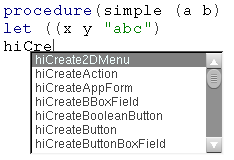
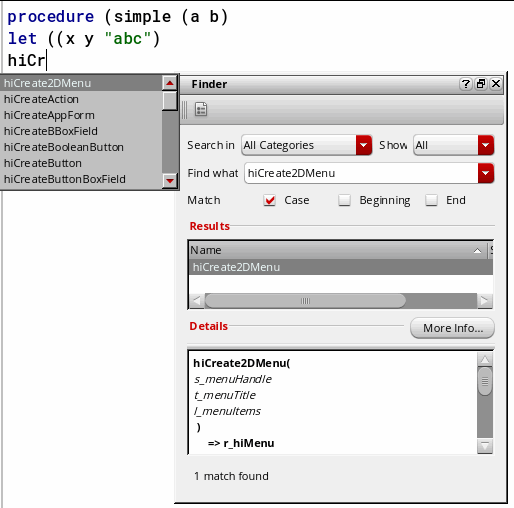
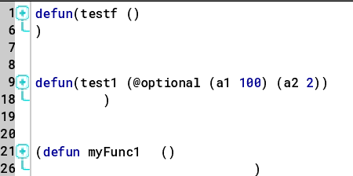
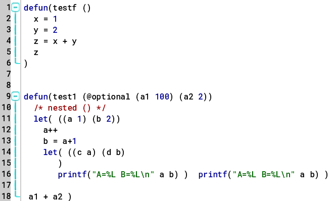

Advanced Editing Features
Viewing Function Definitions
To view the definition of a function in the source code pane:
- Right-click the function name and choose Go To Source ( ) from the context-menu. The first and the last line of the function definition is highlighted in gray.
Browsing Function Tree
To browse the calling tree of user-defined functions directly from the source code pane:
The Code Browser assistant gets displayed with the name of the selected function in the Function drop-down list and its expanded tree in the results pane.
Matching Parentheses
For better code inspection, you can use the Go To Matching Parenthesis command.
The cursor moves to the matching parenthesis of the opening or closing parenthesis.
For better usability, the Go To Matching Parenthesis command can also be accessed by using the Ctrl + M bindkey. The two other bindkeys that can be used for this feature are:
-
Ctrl + [Moves the cursor to the next inner open parenthesis. -
Ctrl + ]Moves the cursor to the next outer open parenthesis.
Going to a Line
Use the Go To Line Number command to go to a specific line in a file.
- Choose Edit – Go To Line Number and enter a line number. The cursor moves to the specific line.
- Having located a line, click OK close the dialog box or Apply to keep it open and continue to search for other lines.
The Go To line Number command can also be accessed by using the Ctrl + G bindkey. The two other bindkeys that can be used for this feature are:
Ctrl + Home Moves the cursor to the beginning of the file.
Ctrl + End Moves the cursor to the end of the file.
Selecting Text Between Matching Parentheses
To select the text between the matching parenthesis:
-
Place the cursor on an opening or closing parenthesis and press
Ctrl+Shift+M. The text between the two matching parenthesis gets selected.
Autocompleting Function Names
The autocomplete feature enables automatic completion of keywords or function names based on your keystrokes. To enable this option:
- Choose Options – Editor.
-
Select the Enable name completion check box.
When name completion is enabled, a list of valid function names displays in the tooltip on entering three or more keystrokes, or on pressingCtrl+Space.
If the Finder assistant is open, it is updated with the finder documentation of the selected function.
 -
Click an appropriate function name in the pop-up list to add it to your code.
The list of valid function names is picked up from the finder (.fnd) files found in:your_install_dir/doc/finder/language/functionArea/*.fnd
You can add your own internal functions to the autocomplete list by copying your function information to a finder database file under the finder directory. The name-completion option can also show matches with variable names and other function names that do not have finder files.
Indenting Code
- Use the Shift left ( ) or Shift right ( ) icons from the Edit toolbar to indent your code to the left or right by a predefined number of spaces.
Clicking the Shift left icon removes one level of indent from the current line (that is, the line on which the mouse pointer is placed) or selected block of code (including a partially selected line). Shift left stops indenting to left when one of the source lines has reached its limit, which is less than the tab stop value. If tab stop is set to 4, and there are only one-three spaces to the left of the line, then that line cannot indent to the left any more.
Clicking the Shift right icon adds one level of indent to the current line or selected block of code.
Folding and Expanding Code
You can use SKILL IDE’s code folding feature to collapse or expand parts of your code, helping you navigate and focus on specific sections. You can fold any code section as long as it is contained within a set of parenthesis ( ) that are not on the same line number. It is also possible to fold nested code blocks.
-
Click the Outline View(
 ) icon in the Edit toolbar to fold the code in the SKILL IDE editor window. Alternatively, right-click in the left margin of the source code pane and choose Outline Mode from the context menu.
) icon in the Edit toolbar to fold the code in the SKILL IDE editor window. Alternatively, right-click in the left margin of the source code pane and choose Outline Mode from the context menu.
When the code is folded, a icon appears to the left of the code blocks.

On folding or collapsing the code, the lines containing the opening and closing parenthesis form an outline of the folded code, while the lines within the parenthesis are hidden. For example in the image below, line number 1 and 6 contain the opening and closing parenthesis, and thus form the outline of the folded code.
-
Click the Expand All (
) icon in the Edit toolbar to unfold or expand the code in the SKILL IDE editor window. Alternatively, right-click in the left margin of the source code pane and choose Expand All from the context menu. When the code is expanded, a
icon and a vertical bar appear to the left of the code blocks.
The icon and the vertical bar also appear every time you place the pointer before an opening parenthesis or after a closing parenthesis of a code block.

To unfold or expand only a specific code block, right-click in the left margin of the code block that needs to be expanded and choose Unfold Line from the context menu. Unfolding a specific code block does not unfold the nested code blocks within the top-level code block.
Important Points to Note
- Folding or unfolding the code does not change the flow of code in any way.
- Undo and redo operations have no impact on code folding.
- Code folding changes are not persistent across sessions. After you close a file containing folded code, the file will be restored to its previous state.
Related Topics
Return to top